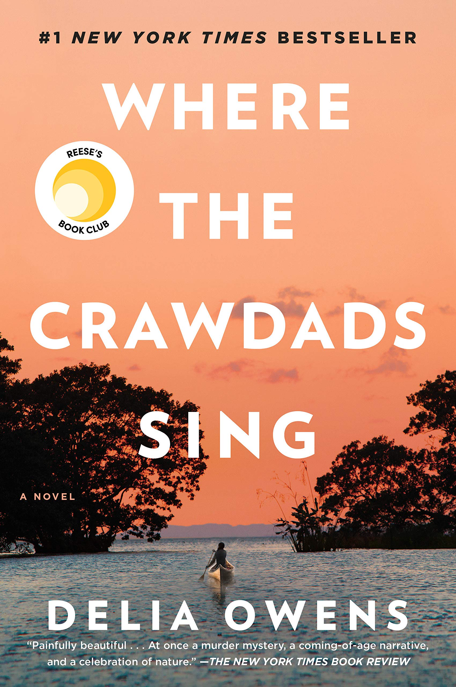
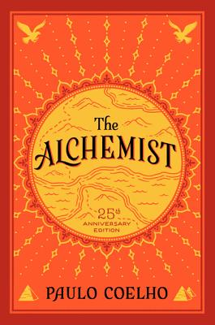

Curious about what other people think? Search up a title and browse the reviews from five-star page-turners to one-star 'not for me's.
I loved everything about The People We Keep, beginning with the narrator, April Sawicki, who is both wise beyond her years and unbelievably naive, to the fact it's 1994 and no one has a cell phone. Allison Larkin has given us a heroine who is raw and real, a young person capable of breaking your heart one moment and lifting it up the next.

I am feeling extremely raw after reading this. This book is so wonderful, but also so terrible and heartbreaking. I swear, I don't think I've felt this many emotions from a book in a long, long time. It made me feel happiness, sadness, rage, and love — sometimes all at the same time.
Easily the best book I've ever read. What a freaking RIDE! Beautifully written, I felt so many intense emotions throughout the entire thing. A tale of survival, isolation, class, love, childhood trauma, nostalgia, & our connection to this beautiful Earth. I found myself so enwrapped in the story, so much so, that I found myself crying. I've never cried from a book before. A tale you so badly want to figure out for yourself you're constantly thrown in different directions. I couldn't put it down.
I slept with this book after I read it. I kid you not: I held its bulking, hardcover bound 700 pages in my arms as I fell asleep amid a raging storm. I refused to let A Little Life leave me. Its brilliant writing, its broken characters, and its bleak, unforgiving story dug into my heart, into the very pores of my skin. As a twenty-year-old, I felt both so young and so old upon finishing this novel, as if its sheer humanity aged my soul while making me appreciate all the years I still have left.

Crying in H Mart is my favorite book of all time. The quiet devastation, the raw emotion, the sheer wisdom inside its pages. It brought tears to my eyes practically every other page. I've never gone through such an emotional journey triggered by a book before. The sense of impending doom and the heavy sadness of each moment, the conflicting emotions and frank writing style, the haunting dialogue and the stunning descriptions of food. They all came together to form the perfect book. This book is about the deep connection of food and the love between a mother and her child, even through hardship and pain and hurt feelings. I was on the verge of crying the entire time. I've never been more emotionally wrecked.
Definitely, a must-read for everyone. The author did a splendid job presenting the most overlooked sophisticated corners of lives through the lens of a wandering protagonist. I have come across a few books engaging enough to hook you at the very beginning and keep reeling you in till the very end.